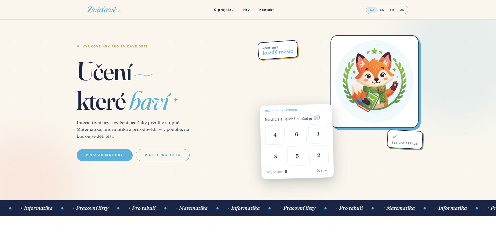
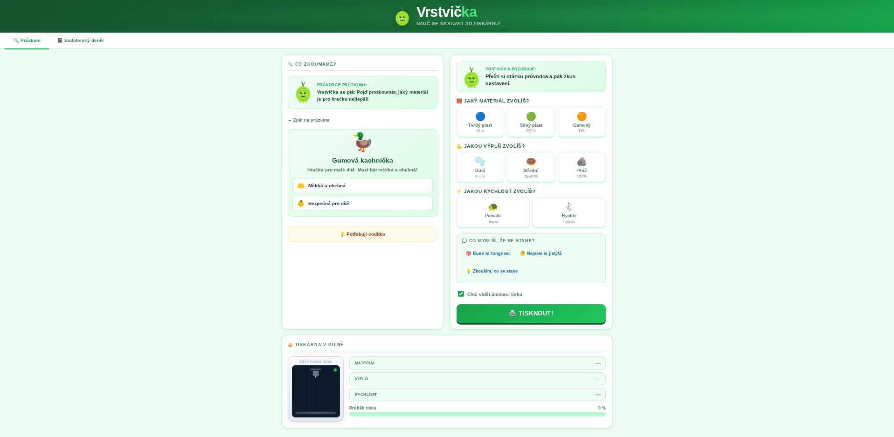
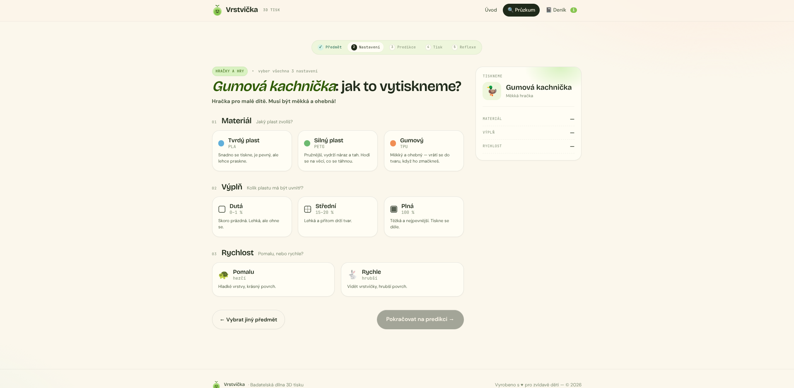

Učím informatiku na základní škole – a každý den vidím, jak vzdělávací aplikace závodí o pozornost dětí stejnými technikami jako sociální sítě. Chtěla jsem zjistit, jestli to jde udělat jinak – bez časových limitů, bez penalizací, bez manipulativních vzorců.

Projekt Zvídavě.cz vznikl jako reakce na chybějící, kvalitní a etické digitální nástroje pro děti na 1. stupni základních škol. Původním impulsem byla snaha přiblížit dětem principy fungování 3D tiskárny – běžné programy (slicery) jsou pro malé děti příliš komplexní, proto vznikla Vrstvička. Projekt se následně rozšířil o matematické aplikace (Zlomková zoo 1 a 2), protože stávající řešení na trhu jsou často placená nebo neodpovídají mým pedagogickým a etickým standardům.
Na projektu jsem pracovala zcela samostatně. Zastřešila jsem kompletní proces od úvodního výzkumu, přes tvorbu informační architektury, UX/UI design, etický framework, až po samotný vývoj aplikací a webu.
Design pro děti má svá specifika – děti vám nevyplní dotazník, musíte je pozorovat v akci. Můj výzkumný a testovací proces stál na třech pilířích:
Před samotným návrhem jsem vedla konzultace s kolegy a kolegyněmi z pedagogické praxe. Zjišťovala jsem, jaké aplikace jim ve výuce chybí, kde vidí mezery a v čem vnímají stávající nástroje jako problematické. Na základě toho jsem vytvořila interní etický checklist, kterým musela každá aplikace projít – například absence bodových odměn a streak mechanismů nebo podpora čisté vnitřní motivace bez umělého tlaku na výkon.
Aplikaci Vrstvička jsem netestovala jako statický obrázek, ale rovnou jako funkční naprogramovaný prototyp přímo ve třídě. Vzorek: 15 dětí (rozdělených do dvou skupin) + 5 dospělých (pedagogů). Zúčastněné pozorování během výuky odhalilo, kde děti tápají, které prvky je zahlcují a kde ztrácí pozornost. Aplikace následně prošla několika iteracemi – od ladění textového obsahu přes grafickou nasycenost až po finální UX respektující kognitivní kapacitu dětí.
Podobným procesem prošly i matematické moduly pro 5. třídu. Vzorek: 9 dětí + 1 dospělá osoba. Testování na reálném prototypu ukázalo, jak klíčová je vizuální čistota při vysvětlování abstraktních pojmů jako zlomky – každý matoucí prvek v UI okamžitě odváděl pozornost dětí od matematického problému.
Návrh neprobíhal lineárně. Testování funkčních prototypů přímo ve třídě mi poskytlo okamžitou zpětnou vazbu a odhalilo kritická místa v kognitivní zátěži dětí.
První design byl pro děti přehlcující. Chyběl v něm ukazatel pokroku (progress bar) a jasné instrukce. Děti v aplikaci tápaly a třídou se neustále ozývalo: „Co mám dělat?“
Nejjasnější signál přišel od jednoho z žáků: při prvním pohledu na obrazovku se zarazil a zeptal se – „Jé, co s tím?“
UX řešení: Celé rozhraní jsem radikálně zjednodušila. Odstranila jsem vizuální smog, přidala jasný progress bar a zpřehlednila zadání úkolů.
Výsledek: Při testování upravené verze dotazy na fungování zcela zmizely. Třída utichla a děti se ponořily do samostatného, klidného zkoumání.


Iterace na čistší vizuál a snadnější navigaci – od přehlceného rozhraní k jednoduchosti.
Při návrhu vizuální identity webu Zvídavě.cz i samotných aplikací jsem balancovala mezi hravostí a soustředěním. Každé rozhodnutí mělo etický rozměr.
Zvolila jsem pastelové, ale jasně definované tóny. Záměrně se vyhýbám jak agresivní křiklavosti běžné v komerčních aplikacích pro děti, tak nudné šedi. Prostředí působí vesele a vítaně, ale udržuje si vizuální čistotu – barvy slouží jako navigace a minimalizují kognitivní zátěž dětí.
Průvodci matematickými aplikacemi jsou zvířata. Děti si samy vybraly, která zvířata je budou provázet – zvýšilo to jejich motivaci od prvního okamžiku.
Místo bodového skóre čeká na děti aha-moment: zajímavý fakt o zvířecím průvodci, který je provázaný s matematikou. Např. „Klokan nosí mládě ve vaku přibližně 1/3 roku.“
Každá aplikace musela projít interním checklistem: žádný časový limit, žádná penalizace za chybu, žádný digitální smog, žádný sběr dat o dětech.
Největší důkaz, že to funguje, je moment, kdy se design vytratí a zůstane jen čistá radost z učení.
U Vrstvičky přestal být učitel potřeba – děti pracovaly samostatně a soustředěně. V matematických aplikacích skončila hodina, ale děti si dál povídaly o tom, co nového se dozvěděly o svých zvířatech.
Největší výzvou bylo vymyslet a definovat pevné etické hodnoty pro vzdělávací digitální produkt. Na začátku jsem se pohybovala v šedé zóně a tápala. Naštěstí mě aha-moment dovedl k rešeršování odborné literatury – opřela jsem se o akademické zdroje zaměřené na dětskou psychologii, vnitřní motivaci a etický design. Naučilo mě to, že design pro děti nelze stavět na intuici – musí mít pevný teoretický i etický základ.
Kdybych projekt tvořila znovu od začátku, nejdříve bych si jasně definovala etické a pedagogické hodnoty. Teprve na jejich základě bych začala stavět vizuální a grafickou identitu. Ušetřilo by mi to několik raných designových iterací.
Další kroky:
Chci vizuální prvky sjednotit do udržitelného systému, který mi umožní škálovat a rychleji navrhovat další matematické a technické moduly.
Plánuji zveřejnit zdrojový kód všech her. Chci, aby na mé práci a etickém frameworku mohli stavět další tvůrci a učitelé, kteří chtějí posunout digitální vzdělávání dětí kupředu.